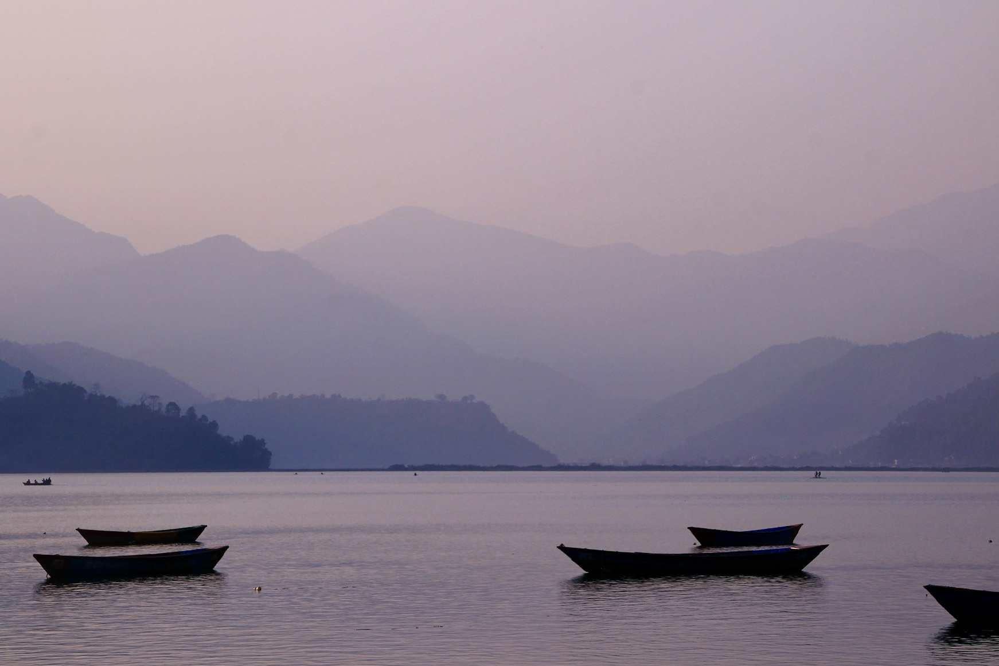
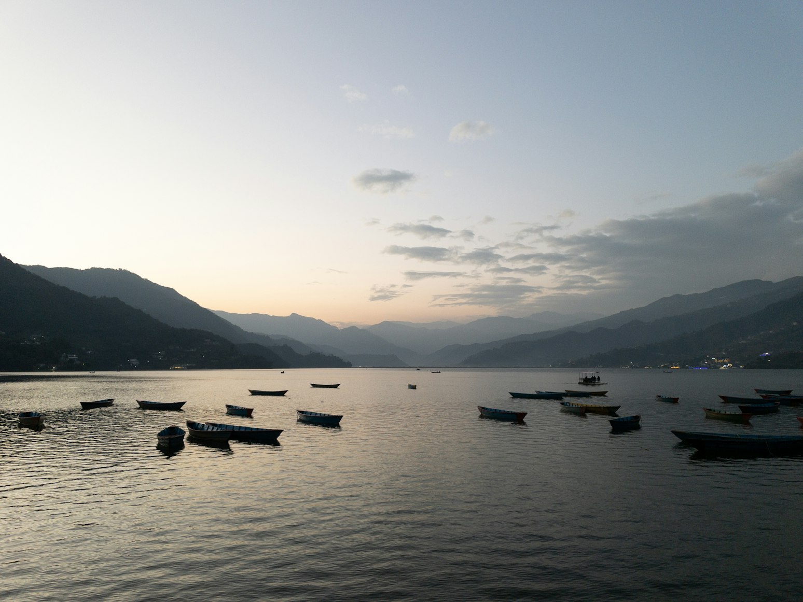
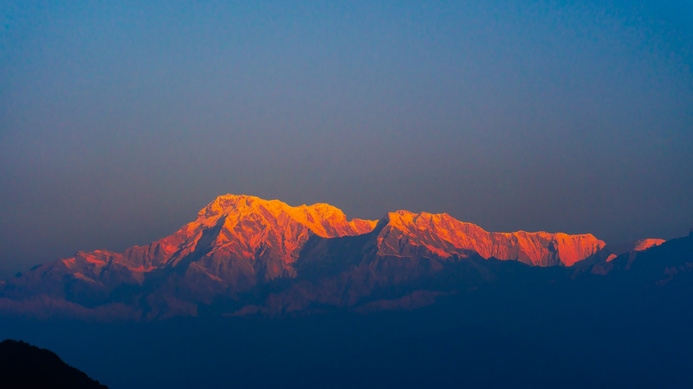
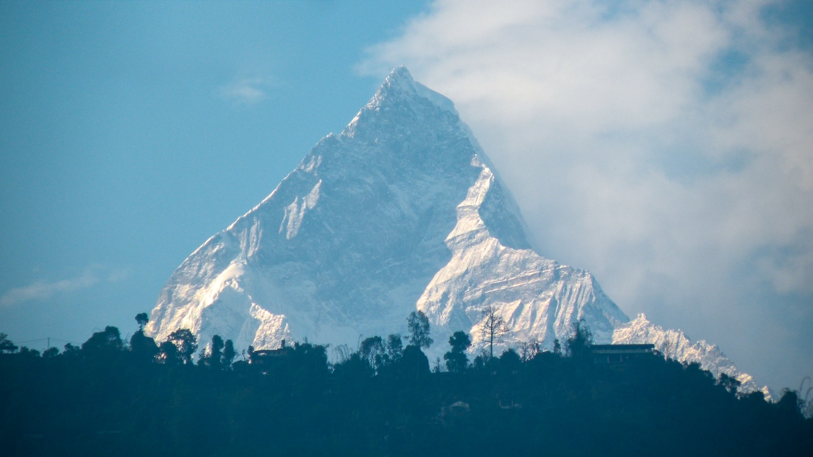
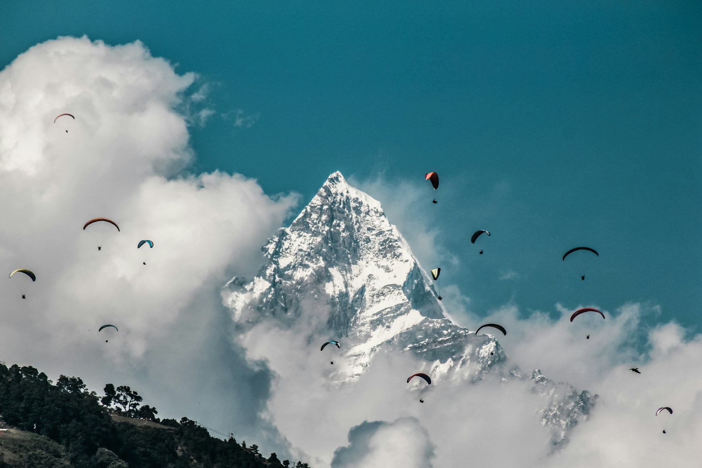
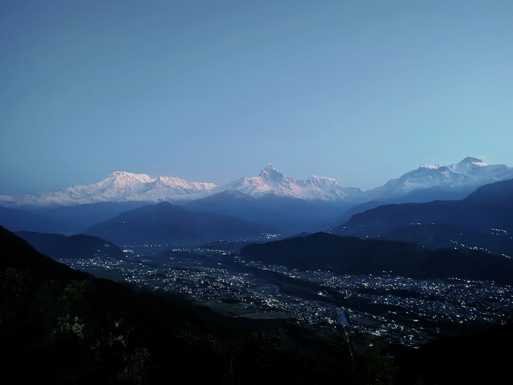
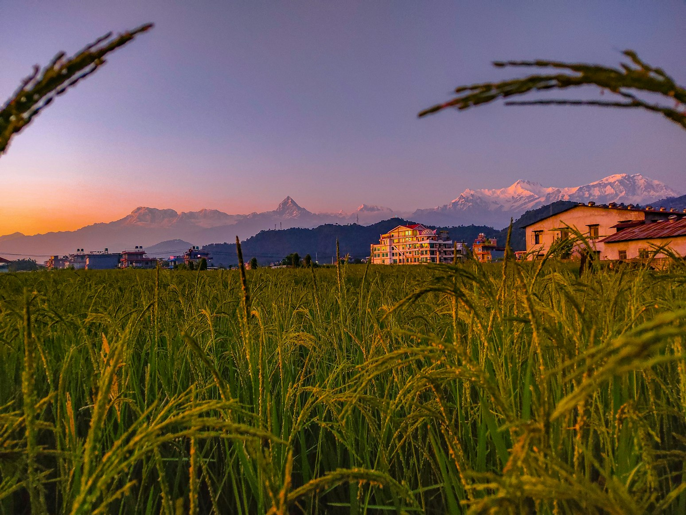
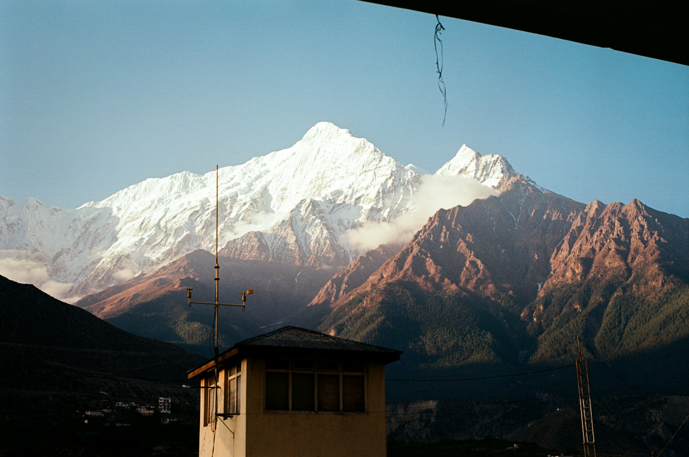
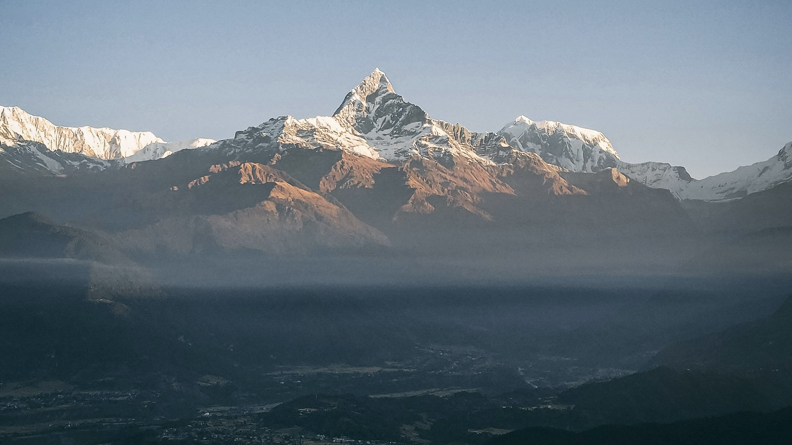
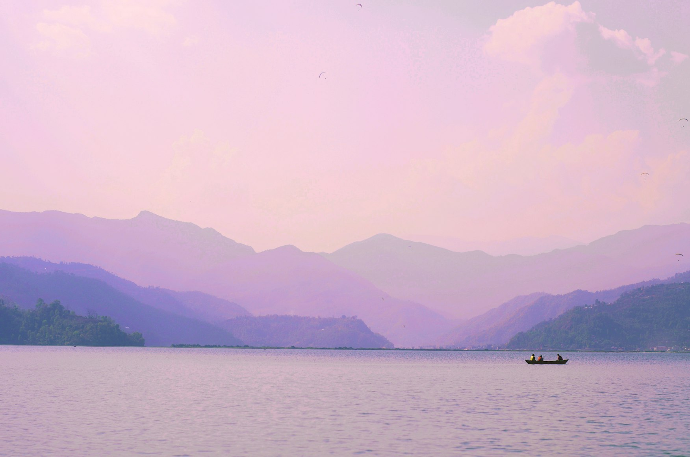

Pokhara does not announce itself loudly. It does not need to. The city works by reflection: the pale morning light on Phewa Lake, the white line of the Annapurna range appearing above the roofs, the impossible fin of Machapuchare rising from cloud as if drawn by hand. Kathmandu may be where Nepal begins for many travellers, but Pokhara is where the country opens its lungs.
Set in central Nepal, Pokhara is widely known as the gateway to the Annapurna region, but to treat it only as a trekking base is to miss its most seductive quality. This is a city of water, terraces, soft air, long breakfasts, temple bells, paragliders, mountain museums, lakeside hotels, and slow afternoons that seem to stretch beneath the snow peaks.
Why Pokhara Feels Different
Pokhara is calmer than Kathmandu, greener than many expect, and more atmospheric than a simple adventure hub. Its drama is vertical: lake below, forested hills in the middle distance, and the Himalayas rising above everything.
This is the kind of city where the best moments happen before the itinerary begins. A boatman unties a wooden rowboat at first light. Dogs sleep in the warmth outside a café. A traveller sits with masala tea while Machapuchare appears for five minutes, then disappears behind cloud.
The mountains are not always visible, which makes them more powerful.
Pokhara teaches patience.
Phewa Lake: the Mirror of the City

Phewa Lake is the emotional centre of Pokhara. Come early, before the motorbikes and breakfast menus and souvenir shops wake fully. The water can be almost still then, carrying the faint reflection of the hills and, on clear mornings, the snow peaks beyond.
A boat ride on Phewa should not be rushed. Choose a wooden boat, go out slowly, and let the city fall away behind you. At the centre of the lake sits Tal Barahi Temple, a small island shrine that adds a ritual note to the landscape.
Around the lakefront, Pokhara becomes soft and cinematic: cafés with terraces, guesthouses hidden behind bougainvillea, travellers walking without urgency.
Do not describe Phewa only as a lake. Notice the way the colour changes: silver at dawn, blue by late morning, violet in the evening, black under monsoon cloud.
Lakeside: Where Pokhara Lives Slowly

Lakeside is the most convenient base for first-time visitors. It has restaurants, cafés, yoga studios, bookshops, trekking agencies, boutique hotels, and easy access to Phewa Lake.
It is also where Pokhara’s international mood is strongest: Himalayan expedition culture mixed with slow-travel comfort.
The best way to experience Lakeside is not by ticking off places. Walk. Start near the lake before breakfast, pause for coffee, browse small shops, return at sunset.
The area can be busy, but its rhythm remains gentler than Nepal’s larger urban centres.
For a more refined stay, choose a property slightly removed from the loudest stretch of Lakeside, ideally with a lake or mountain view.
Sarangkot: Sunrise Over the Annapurna Range

Sarangkot is Pokhara’s classic sunrise viewpoint, and it is worth the early alarm.
The experience begins in darkness: cold air, quiet roads, headlights climbing the hill. Then the horizon slowly separates from the sky. First the outline of the Annapurna range appears, then a faint rose colour touches the snow, and finally Machapuchare sharpens into view.
This is one of the most important scenes in Pokhara because it gives the city its scale.
The city below looks temporary.
The mountains look eternal.
Sarangkot is also associated with paragliding, one of Pokhara’s signature adventure experiences. But even for travellers who have no desire to fly, the viewpoint is essential.
Machapuchare: the Mountain That Defines Pokhara

Machapuchare, often called Fishtail Mountain because of its distinctive summit shape, is the visual soul of Pokhara.
It appears in fragments: above a rooftop, between clouds, behind a field, reflected faintly in water.
Its beauty is not only physical. Machapuchare carries a sense of distance and reverence. It has long been treated as sacred, and unlike many Himalayan peaks, it has not become a summit trophy in the public imagination.
For visitors, this gives the mountain a rare dignity.
You do not conquer it.
You wait for it.
World Peace Pagoda: the Best View Back Toward the Lake
The World Peace Pagoda sits on a hill above the southern side of Phewa Lake and offers one of the finest views over Pokhara, the lake, and the Annapurna range.
The journey matters. You can reach it by road, by hiking, or by combining a boat across Phewa with a climb through forest.
The pagoda itself is bright, quiet, and sculptural, but the real reward is the view: the city spread below, the lake holding the sky, the mountains beyond.
Go in the late afternoon if you want softer light. Stay long enough for the city to begin glowing below.
Pumdikot Shiva Statue: a Newer Panoramic Landmark
Pumdikot has become one of Pokhara’s more prominent modern viewpoints, known for its large Shiva statue and broad views over the valley.
It pairs well with the World Peace Pagoda because both sit above the city and reveal Pokhara’s geography: water, hills, urban life, and the snowy wall beyond.
This stop works especially well for travellers who want a fuller city circuit without committing to a long trek.
It is photogenic, accessible, and dramatic in clear weather.
Devi’s Falls and Gupteshwor Mahadev Cave
Devi’s Falls is one of Pokhara’s unusual natural landmarks: a waterfall that disappears into an underground channel. Nearby, Gupteshwor Mahadev Cave adds a sacred and subterranean counterpoint.
Many city tours pair the two because they sit close together and show a different side of Pokhara: not the open lake and sky, but water vanishing into stone.
These are not the most elegant places in the city, and they can feel busy. But they are part of Pokhara’s texture.
Visit early or with a good guide who can frame the geology, mythology, and local significance rather than rushing you through the stops.
International Mountain Museum
The International Mountain Museum is essential for travellers who want context.
Pokhara is not only beautiful because mountains surround it; it is beautiful because those mountains have shaped culture, ambition, risk, trade, spirituality, and identity.
This is where a sophisticated visitor begins to understand the difference between looking at the Himalayas and understanding them.
The museum gives names, stories, equipment, routes, communities, and consequences to the peaks that appear so effortlessly from a café terrace.
Begnas Lake: Pokhara Without the Obvious Crowd
If Phewa is Pokhara’s public face, Begnas Lake is its quieter sibling.
It lies outside the main tourist centre and feels more rural, more spacious, and less curated.
Come here for stillness: green hills, local boats, simple lakeside meals, and fewer distractions.
Begnas is ideal for travellers staying longer in Pokhara or those who want one day away from Lakeside.
The Old Bazaar and Bindhyabasini Temple
To understand Pokhara beyond the lakefront, go into the older parts of the city.
The Old Bazaar has a different rhythm: local commerce, traditional houses, small shops, and fewer travellers.
Nearby Bindhyabasini Temple adds a devotional layer, especially in the morning when worshippers arrive with flowers and offerings.
This part of the city prevents the article from becoming only lake and mountains.
It gives Pokhara human depth.
Paragliding: Seeing Pokhara From the Air

Pokhara is one of Asia’s most memorable places to paraglide because the landscape is unusually theatrical: lake below, city beneath, hills around, Himalayas ahead.
For many visitors, it becomes the defining adrenaline moment of the trip.
But in a refined guide, paragliding should be approached carefully. Recommend licensed, reputable operators, check current flying conditions, and avoid treating the experience as casual.
Weather, regulation, and launch sites can change.
The magic is real, but so is the need for professionalism.
A Perfect Slow Day in Pokhara

Start before sunrise. Go to Sarangkot, then return to Lakeside for a late breakfast with a mountain view. Spend the late morning on Phewa Lake by boat. Visit Tal Barahi Temple if the mood feels right. Rest during the warmest hours.
In the afternoon, drive or hike toward the World Peace Pagoda. Let the light soften. Watch the lake turn silver.
Return to Lakeside for dinner, preferably somewhere with an open terrace and no hurry.
That is Pokhara at its best: not overplanned, not empty, not passive.
Spacious.
Where to Stay

For first-time visitors, Lakeside is the most practical choice. It gives easy access to restaurants, cafés, boats, shops, and guides.
For romance or retreat, choose a quieter lakeside hotel or a hill property with views. For travellers seeking a more elevated experience, look at mountain lodges and boutique resorts outside the busiest centre.
The best rooms in Pokhara are not necessarily the most opulent.
They are the ones where you wake up, open the curtains, and see either water, hills, or snow.
When to Visit Pokhara

The clearest mountain views usually come outside the heavy monsoon months.
Autumn and spring are the classic travel seasons in Nepal, especially for trekking and Himalayan visibility. Winter can bring crisp skies and colder mornings. Monsoon gives lush landscapes, dramatic clouds, and fewer visitors, but mountain views can be obscured and road conditions less predictable.
For this specific kind of article — reflective, atmospheric, slow — early morning matters more than season.
Pokhara is always better before the day becomes busy.
How Long to Stay

Two nights are enough only to understand that you should have stayed longer.
Three to four nights give the city room to work on you: one sunrise, one lake morning, one cultural day, one slow day with no agenda.
For a refined itinerary, four nights works beautifully.
Day one: arrive, settle into Lakeside, sunset by Phewa.
Day two: Sarangkot sunrise, lake, cafés, slow afternoon.
Day three: World Peace Pagoda, Pumdikot, Old Bazaar.
Day four: Begnas Lake or International Mountain Museum.
Day five: depart slowly or continue toward Annapurna.
What to Write Next for Internal Links
This article can naturally lead readers into future stories about where to stay in Pokhara, Sarangkot sunrise, Phewa Lake, Pokhara versus Kathmandu, Begnas Lake, and the best luxury lodges near the Annapurna foothills.
Final Impression

Pokhara is not a city that reveals itself through monuments alone.
Its real architecture is made of light, water, weather, and distance.
The lake holds the mountains for a moment, then loses them. Clouds close over Machapuchare. A boat crosses the reflection and breaks it into silver lines.
That is why people stay longer than planned.
Pokhara does not simply show you the Himalayas.
It gives you time to feel what it means to live beneath them.